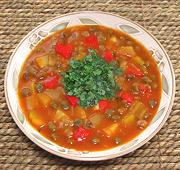

|
Green Pigeon Pea Vianda SoupPuerto Rico / California - Asopao de Gandules | ||||
| Makes: Effort: Sched: DoAhead: |
13 cups *** 1-3/4 hrs Yes |
Vegetarian recipes are an alien concept to Puerto Ricans (except a few snack foods). I have replaced rice in the pattern recipe with Viandas to make it suitable for doing ahead and buffet service. | |||
|
|
2 15oz 1 1-1/2 6 2 5 3 1 2 5 1 1 -------- 1/3 |
cans # # oz cl oz oz c T c T t --- c |
Pigeon Peas (1) Kabocha Squash (2) Viandas (3) Onion, red Garlic Bell Pepper, red Chili, mild (4) Culantro Leaf (5) Tomato Sauce (6) Olive Oil Broth (7) Salt Pepper -- Finish Cilantro, chopped |
Prep - (55 min)
|